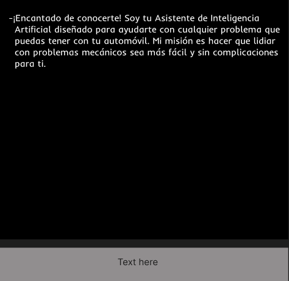

Instrucciones
Formula Tu Pregunta Claramente:
Antes de empezar, asegúrate de tener en mente
la pregunta o el problema que quieres resolver.
Ingresa Tu Pregunta o Problema:
En este caso, puedes escribir tu pregunta o describir
el problema que estás experimentando con tu
automóvil. Puedes incluir detalles como ruidos,
luces de advertencia, síntomas del problema, etc.
Analizar Respuesta:
Lee la respuesta cuidadosamente. La IA proporcionará información detallada sobre el problema que has planteado y, si es posible, sugerencias para resolverlo.
